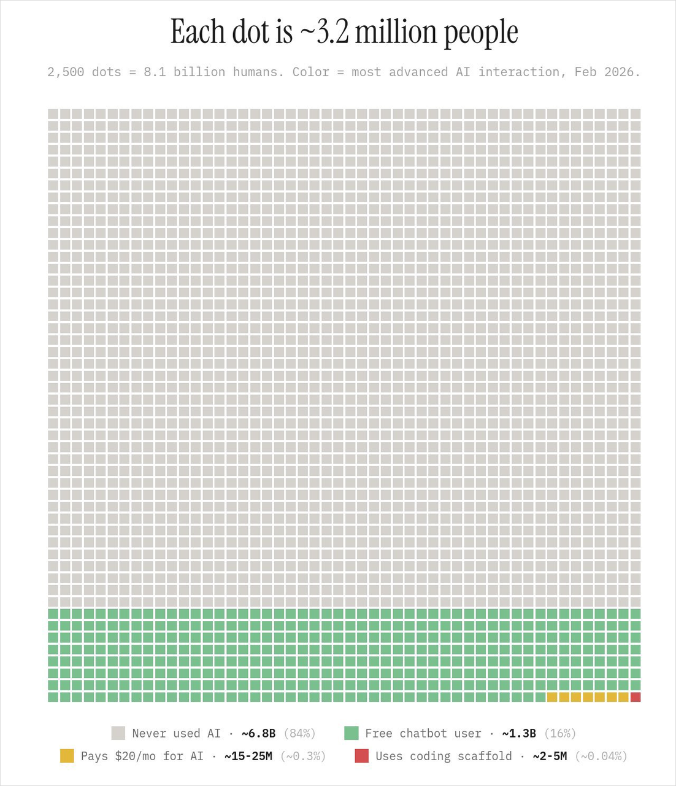

看見 AI 的行銷能力
AI 時代
企業行銷策略
企業行銷策略
Zell｜梵亞行銷顧問
2026.10.29 09:20–11:50
英才樓 R313
Zell 梵亞行銷顧問
01
看見 AI 的行銷能力
客戶最後買到的是什麼？
一則好看的貼文？
一次值得付費的體驗？
一次願意再來的理由？
Zell 梵亞行銷顧問
02
看見 AI 的行銷能力
AI 可以參與行銷的整段工作
讀資料，找出值得解決的問題
比較方案，整理成本與限制
起草內容、排程與檢核表
Zell 梵亞行銷顧問
03
看見 AI 的行銷能力
工具換了，做法也要跟著變
只把舊流程做快一點，
可能仍在解錯問題。
可能仍在解錯問題。
原版照片沿用；僅作工作方式的比喻
04
看見 AI 的行銷能力
一場咖啡品牌的行銷活動
課後咖啡：大學附近的午後空檔
想帶來首次消費，再觀察回購
老闆期待：6,000 元、150 位新客
虛構教學模擬，不是真實店家或成效｜輸出待審
05
看見 AI 的行銷能力
先讀資料，再想活動
A：觸及 24,000，首次付款新客 24
B：觸及 8,000，首次付款新客 72
C：觸及 6,000，首次付款新客 60
虛構教學模擬，不是真實店家或成效｜輸出待審
06
看見 AI 的行銷能力
活動方案必須有所取捨
A 曝光較多；B 固定支出／新客較低
C 觀察到較高回購率與訂單貢獻
月份、渠道與客群不同，不能推因果
虛構教學模擬，不是真實店家或成效｜輸出待審
07
看見 AI 的行銷能力
示範一：從資料選方案
Zell 給目標、客群與限制
EVA 比較選項，提出理由
Zell 追問依據與資源取捨
虛構教學模擬，不是真實店家或成效｜輸出待審
08
看見 AI 的行銷能力
「你為什麼選這個方案？」
Zell：先給結論，再列出證據。
EVA：把已知、假設與待確認分開。
虛構教學模擬，不是真實店家或成效｜輸出待審
09
看見 AI 的行銷能力
選擇的理由，要能被追問
150 位新客：初始期待
實際容量：12 筆／日，規劃 10 名額
修訂試行：80 筆、60 新客、18 位30天回購
虛構教學模擬，不是真實店家或成效｜輸出待審
10
看見 AI 的行銷能力
資源花在哪裡，策略就在哪裡
3,000 廣告＋1,000 素材＋500 告示
4,500 元提案支出，1,500 元保留
80 筆情境：活動餘額 3,500 元，非淨利
虛構教學模擬，不是真實店家或成效｜輸出待審
11
看見 AI 的行銷能力
目標與保證是兩回事
目標：希望達到的結果
預估：在假設下推算的結果
承諾：已確認能交付的內容
虛構教學模擬，不是真實店家或成效｜輸出待審
12
看見 AI 的行銷能力
一個方案，需要多種交付物
執行表：誰、何時、做完算什麼
對外文案：能說什麼，不能保證什麼
衡量表：如何知道活動有沒有用
虛構教學模擬，不是真實店家或成效｜輸出待審
13
看見 AI 的行銷能力
示範二：把方案變成行動
Zell 給方案與會議紀錄
EVA 整理交辦與待審文案
Zell 修正承諾與衡量方式
虛構教學模擬，不是真實店家或成效｜輸出待審
14
看見 AI 的行銷能力
「這句話，我們真的能說嗎？」
Zell：哪些是決議，哪些仍待核准？
EVA：文案可以起草；未定責任仍要列出。
虛構教學模擬，不是真實店家或成效｜輸出待審
15
看見 AI 的行銷能力
修正後，才是可審閱的版本
每日 10 組；內用依現場座位
指定品項、領券與核銷方式待核准
所有內容均為待審稿，尚未發布
虛構教學模擬，不是真實店家或成效｜輸出待審
16
看見 AI 的行銷能力
有結果，還要能解釋結果
訂單、新客、回購，分開記錄
11/13 活動結束，回購仍在追蹤
最後一批觀察滿 30 天：12/13
虛構教學模擬，不是真實店家或成效｜輸出待審
17
看見 AI 的行銷能力
AI 能做這麼多，
企業還需要人做什麼？
企業還需要人做什麼？
先把這個問題留著。
Zell 梵亞行銷顧問
18
中場休息
休息 20 分鐘
10:40 回來
下半場：人的定位與要練的技能
Zell 梵亞行銷顧問
19
人的定位與技能
回看剛才的兩段對話
AI 做了很多執行工作。
人在哪些地方改變了結果？
Zell 梵亞行銷顧問
20
人的定位與技能
人的三明治，是反覆循環
人：給目標、背景、限制與標準
AI：執行、整理、計算與起草
人：查證、判斷、修正，再交回 AI
Zell 梵亞行銷顧問
21
人的定位與技能
企業仍需要有人對結果負責
判斷哪個問題值得解決
在資源與風險之間做選擇
確認承諾，協調完成，承擔後果
Zell 梵亞行銷顧問
22
人的定位與技能
已知的已知
資料裡明確寫了什麼？
這個數字是事實，還是教學假設？
定義、期間與單位是否一致？
Zell 梵亞行銷顧問
23
人的定位與技能
已知的未知
已經知道缺哪項資訊
列出誰能確認、何時確認
沒有確認，就保留條件
Zell 梵亞行銷顧問
24
人的定位與技能
未知的未知
AI 可以提出你沒想到的盲點
新提醒先當假說
再找證據，必要時小規模驗證
Zell 梵亞行銷顧問
25
人的定位與技能
一張看起來很有說服力的圖

圖中標示 Feb 2026
無可追溯的原始統計來源
不能當作最新全球使用現況
待核對的圖表｜原圖 Feb 2026｜來源與口徑未核實
26
人的定位與技能
五項值得練的能力
商業理解 ／ 問題定義
資料與數字判讀
AI 協作與查證 ／ 溝通落實
Zell 梵亞行銷顧問
27
人的定位與技能
商業理解：知道為誰創造價值
顧客想解決什麼問題？
公司想改變什麼結果？
這個活動如何把兩者接起來？
Zell 梵亞行銷顧問
28
人的定位與技能
問題定義：把模糊要求說清楚
把「幫我做行銷」改成一份任務
說清楚背景、目標與不能做的事
先約定好成果如何判斷
Zell 梵亞行銷顧問
29
人的定位與技能
數字判讀：看懂分母與代價
人次、訂單、會員不能混為一談
營收、毛利、活動費用要分開
目標不是預測，觀察不是因果
Zell 梵亞行銷顧問
30
人的定位與技能
AI 協作：每一輪都能被檢查
請它區分依據、推論與待確認
挑重要數字與承諾回到原資料
記下修正，讓下一輪更接近需求
Zell 梵亞行銷顧問
31
人的定位與技能
溝通落實：讓別人接得住
有負責人、期限與完成證據
待審稿與已核准內容要分開
遇到變化，回報並重排
Zell 梵亞行銷顧問
32
人的定位與技能
把事情做出來，
也把為什麼說清楚
也把為什麼說清楚
先理解，再協作；做完之後，再檢查。
Zell 梵亞行銷顧問
33
提問與交流
Q&A
哪一段最像你未來會遇到的工作？
哪一個 AI 結果，你最不敢直接相信？
Zell 梵亞行銷顧問
34
備援附錄
備援：示範沒有回應時
明說：接下來是預先準備的示例
對照同一份輸入、推理與修正
不把預備結果冒充現場生成
Zell 梵亞行銷顧問
35
備援附錄
附錄：原版急單判斷
3,000 件急單，先檢查接單條件
補料 500 kg；每件成本 70.64 元
售價 91.80 元；毛利 21.16 元
原版虛構教學案例｜2026/9/12｜非咖啡活動數據
36
備援附錄
附錄：會後整理的方法
決議與建議分開
責任、期限、標準可以追蹤
未確認事項保留在清單上
Zell 梵亞行銷顧問
37